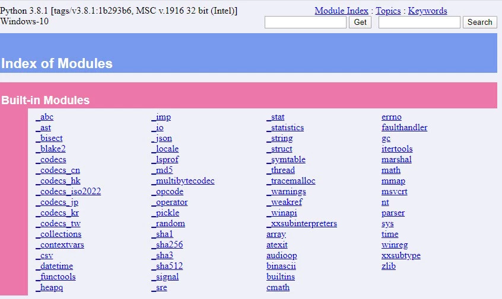
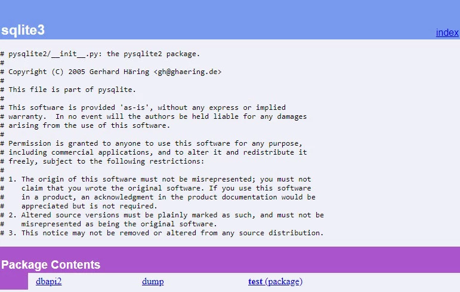

Документирование кода — неотъемлемая часть разработки на Python. Порой документации в коде может быть больше, чем самого кода. Она помогает понять, что делает функция или класс, какие аргументы принимает и что возвращает.
Когда документация и код находятся в разных местах, сопровождать их становиться довольно тяжело. Поэтому на практике документация находится непосредственно рядом с кодом.
Docstring
Docstring — это строковый литерал, который расположен сразу за объявлением модуля, функции, класса или метода. О том, какие существуют соглашения в документировании Python кода описано в документации PEP257.
Документация для классов
Документация класса создается для самого класса, а также для его методов.
classSpeaker:"""Это docstring класса Speaker"""defsay_something(self):"""Это docstring метода"""("something")
После строки документации нужно оставлять пустую строку
Документация для класса может содержать следующую информацию:
краткое описание класса (+ его поведение);
описание атрибутов класса;
описание публичных методов;
все, что связано с интерфейсом для подклассов.
Для методов класса документация может содержать:
краткое описание метода (+ его поведение);
описание аргументов метода;
побочные эффекты (если таковые возникают при выполнении метода);
исключения.
Ниже — пример с более подробной документацией класса:
classTextSplitter:"""Класс TextSplitter используется для разбивки текста на словаОсновное применение - парсинг логов на отдельные элементыпо указанному разделителю.Note:Возможны проблемы с кодировкой в WindowsAttributes----------file_path : strполный путь до текстового файлаlines : listсписок строк исходного файлаMethods-------load()Читает файл и сохраняет его в виде списка строк в linesget_splitted(split_symbol=" ")Разделяет строки списка по указанному разделителюи возвращает результат в виде списка"""def__init__(self, file_path:str):self.file_path = file_path.strip()self.lines = []defload(self) ->None:"""Метод для загрузки файла в список строк linesRaises------ExceptionЕсли файл пустой вызовется исключение"""withopen(self.file_path, encoding="utf-8")asf:forlineinf:self.lines.append(line.rstrip('\n'))iflen(self.lines) ==0:raiseException(f"file{self.file_path}is empty")defget_splitted(self, split_symbol:str=" ") ->list:"""Разбивает текстовые строки lines, преобразуя строку всписок слов по разделителюЕсли аргумент split_symbol не задан, в качестве разделителяиспользуется пробелParameters----------split_symbol : str, optionalразделитель"""split_list = []forstr_lineinself.lines:split_list.append(str_line.split(split_symbol))returnsplit_list
Документация для пакетов
Документация пакета размещается в файле __init__.py в верхней части файла (начиная с 1-й строки). В ней может быть указано:
описание пакета;
список модулей и пакетов, экспортируемых этим модулем;
автор;
контактные данные;
лицензия.
"""Пакет Mos помогает создать полноэкранный текстовый интерфейс в консоли.Alex Ivanov [https://alex.ivanov.ru/]alex.ivanov@gmail.com# License: BSD"""__author__ ='Alex Ivanov'try:from.versionimportversionexceptImportError:version ="0.0.0"__version__ = version
Документация для модулей
Документация модулей аналогична документации классов. Вместо класса и методов в данном случае документируется модуль со всеми его функциями. Размещается в верхней части файла (начиная с 1-й строки).
Форматы Docstring
Строки документации могут иметь различное форматирование. В примере выше мы использовали стиль NumPy. Существуют и другие форматы:
Google styleguide -> Comments and Docstrings
Numpydoc docstring guide
Epydoc
reStructuredText (reST)
Вывод документации на экран — help() и __doc__
Строки документации доступны:
из атрибута __doc__ для любого объекта;
с помощью встроенной функции help().
Выведем документацию с помощью функции help():
>>>importmy_module>>>help(my_module)Help on module test:NAMEtest - Это docstring модуля, он однострочный.FILE/var/www/test.pyCLASSESMyClassclassMyClass| Этоdocstringкласса.||Methodsdefinedhere:|| my_method(self)| Это docstring методаFUNCTIONSmy_function(a)Это многострочный docstring для функции my_function.В многострочном docstring первое предложениекратко описывает работу функции.
Также можно выводить документацию отдельного объекта:
>>>importmy_module>>>my_module.__doc__>>>my_module.my_function.__doc__>>>my_module.MyClass.__doc__>>>my_module.MyClass.my_method.__doc__
Pydoc
Для более удобной работы с документацией, в Python существует встроенная библиотека pydoc.
Pydoc автоматически генерирует документацию из Python модулей. Информацию по доступным командам модуля pydoc можно получить набрав в терминале:
python -m pydoc
Разберем подробнее, что умеет pydoc.
Вывод текста документации
pydoc <name> — покажет текст документации указанного модуля, пакета, функции, класса и т.д. Если <name> содержит "\", Python будет искать документацию по указанному пути.
Для примера, посмотрим документацию встроенного модуля math:
python -m pydoc mathHelp on built-inmodule math:NAMEmathDESCRIPTIONThis module provides access to the mathematical functionsdefined by the C standard.FUNCTIONSacos(x, /)Return the arc cosine (measuredinradians) of x.acosh(x, /)Return the inverse hyperbolic cosine of x....
В консоль выведется название модуля, его описание и описание всех функций в модуле.
Поиск по документации
pydoc -k <keyword> — найдет ключевое слово в документации всех доступных модулей.
Допустим, нам нужно распаковать gzip файл. Поищем слово "gzip":
python -m pydoc -k gzip_compression - Internal classes used by the gzip, lzmaandbz2 modulesgzip - Functions that readandwrite gzipped files.test.test_gzip - Test scriptforthe gzip module.
В списке мы видим модуль gzip. Теперь можно посмотреть его документацию:
python -m pydoc gzipHelp on module gzip:NAMEgzip - Functions that readandwrite gzipped files.DESCRIPTIONThe user of the file doesn't have to worry about the compression,but random access is not allowed.
По описанию, данный модуль решит нашу задачу.
HTTP сервер с документацией
Для удобства просмотра документации, pydoc позволяет одной командой создать HTTP-сервер:
sudopython -m pydoc -p331Server ready at http://localhost:331/Server commands: [b]rowser, [q]uitserver>
Теперь можно перейти в браузер и зайти на http://localhost:331/

Для остановки сервера введите "q" и нажмите "Enter":
server> q
Server stopped
Также HTTP-сервер доступен через python -m pydoc -b – эта команда создаст сервер на свободном порту, откроет браузер и перейдет на нужную страницу.
Запись документации в файл
python -m pydoc -w sqlite3 — запишем файл с документацией по модулю sqlite3 в html файл.

Автодокументирование кода
Для того чтобы облегчить написание документации и улучшить ее в целом, существуют различные Python-пакеты. Один из них — pyment.
Pyment работает следующим образом:
Анализирует один или несколько скриптов.
Получает существующие строки документации.
Генерирует отформатированные строки документации со всеми параметрами, значениями по умолчанию и т.д.
Далее вы можете применить сгенерированные строки к своим файлам.
Этот инструмент особенно полезен когда код плохо задокументирован, или когда документация вовсе отсутствует. Также pyment будет полезен в команде разработчиков для форматирования документации в едином стиле.
Установка:
pip install pyment
Использование:
pyment myfile.py # для файла
pyment -w myfile.py # для файла + запись в файл
pyment my/folder/ # для всех файлов в папке
Для большинства IDE также существуют плагины, помогающие документировать код:
AutoDocstring – для VS Code.
AutoDocstring – для SublimeText.
Python DocBlock Package – для Atom.
Autodoc – для PyCharm.
В PyCharm существует встроенный функционал добавления документации к коду. Для этого нужно:
Переместить курсор под объявление функции.
Написать тройные кавычки """ и нажмите "Enter".